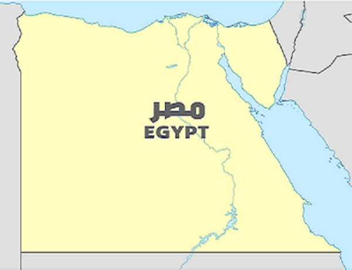

Luxor's Karnak Temple and the Valley of the Kings
Famed for the Valley of the Kings, Karnak Temple, and the Memorial Temple of Hatshepsut,
the Nile-side town of Luxor in Upper Egypt has a glut of tourist attractions.
This is ancient Thebes, power base of the New Kingdom pharaohs, and home to more sights
than most can see on one visit.
While Luxor's East Bank holds the modern city, with its vibrant souq; the two temples
of Karnak and Luxor; and the museum; the West Bank's lush farmland and barren cliffs
are where the vast majority of Luxor's tourist attractions sit, with so many tomb and
temple sights that it has been called the biggest open-air museum in the world.
Pyramids of Giza
The last surviving of the Seven Wonders of the Ancient World, the Pyramids of Giza are one of
the world's most recognizable landmarks.
Having awed travelers down through the ages, these tombs of the Pharaohs Cheops (Khufu),
Chephren (Khafre), and Mycerinus (Menkaure), guarded by the enigmatic Sphinx, are usually
top of most visitor's lists of tourist attractions to see in Egypt and often the first
sight they head to after landing.
Today, sitting on the desert edge of Cairo's sprawl, these megalithic memorials to dead
pharaohs are still as wondrous a sight as they ever were and an undeniable highlight of
any Egypt trip.
Nile River
Egypt is defined by the Nile. For many visitors, a multi-day cruise upon this famed
waterway that saw the rise of the Pharaonic era is a highlight of their Egypt trip.
Cruising the Nile is also the most relaxing way to see the temples that stud the
banks of the river on the route between Luxor and Aswan, plus sunrise and sunset
over the date-palm-studded river banks, backed by sand dunes, is one of Egypt's
most tranquil vistas.
Sharm El-Sheikh
With sunshine and warm waters all year round, Sharm El Sheikh is the closest destination
to Europe where you can soak up sun, dive amazing corals reefs, and enjoy the sea any
time you need a break from routine.
Sharm El Sheikh boasts the widest array of fun, exciting and even crazy water and
extreme sports: besides diving, snorkeling, sailing, wind and kite-surfing, you
can even try sky diving or parachuting from a helicopter on your next holiday in
Sharm El Sheikh.
Siwa
For desert lovers, explore the beautiful Siwa Oasis where many Egyptians and foreigners
flock to visit it. Siwa is one of the best tourist destinations in Egypt. After a long
journey through the landscape, you will know what you are missing when you reach Siwa Egypt.
You can see Its rich history of heritage, its salty lakes, and its abundance of springs and
freshwater, which contributed to the influx of tourism in Siwa.
Siwa has more than just amazing scenery, it carries its own culture. Siwa residents speak
their language, which is different from that used in the rest of Egypt's provinces. Siwa Oasis
is located approximately 350 miles from Cairo, east of the Libyan border, and is one of Egypt’s
best oases in the Western Desert
Aswan
Egypt's most tranquil town is Aswan, set upon the winding curves of the Nile. Backed by
orange-hued dunes, this is the perfect place to stop and unwind for a few days and soak
up the chilled-out atmosphere.
Take the river ferry across to Elephantine Island and stroll the colorful streets of the
Nubian villages. Ride a camel to the desert monastery of St. Simeon on the East Bank. Or
just drink endless cups of tea on one of the riverboat restaurants, while watching the
lateen-sailed feluccas drift past.